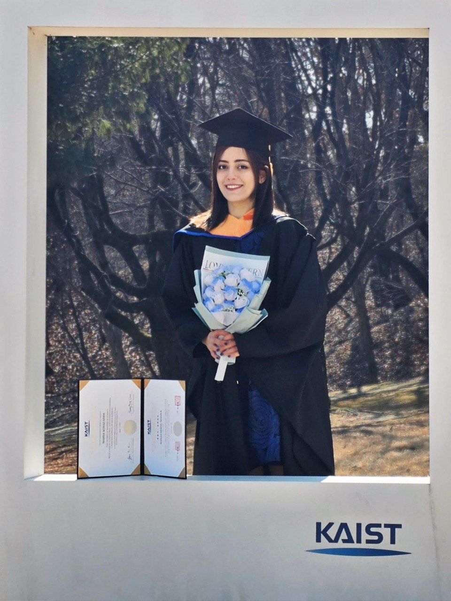
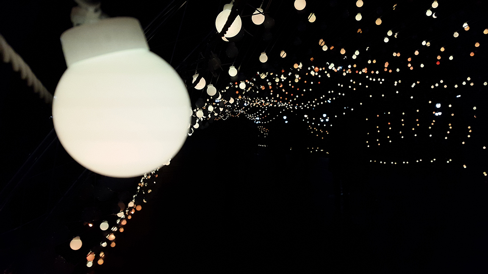
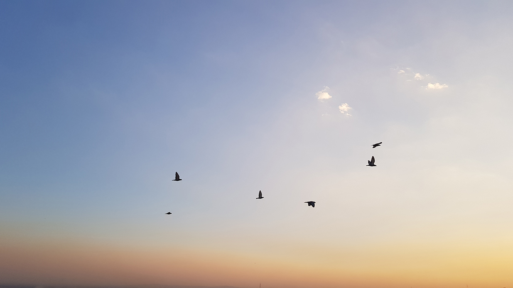
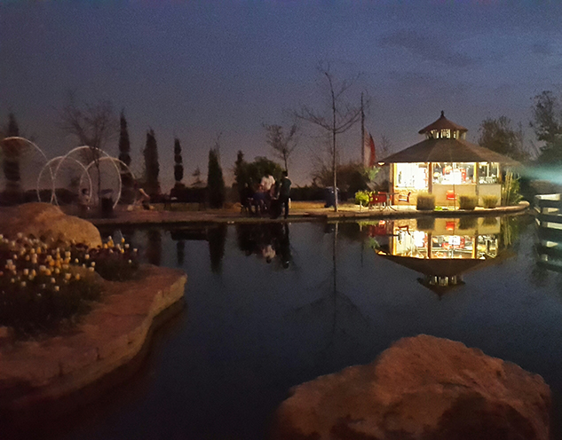
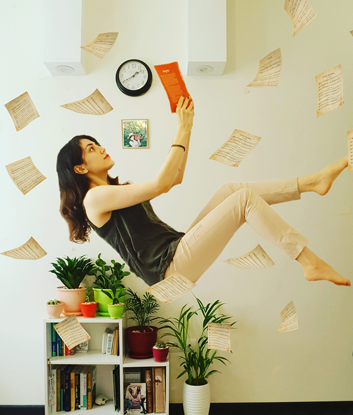
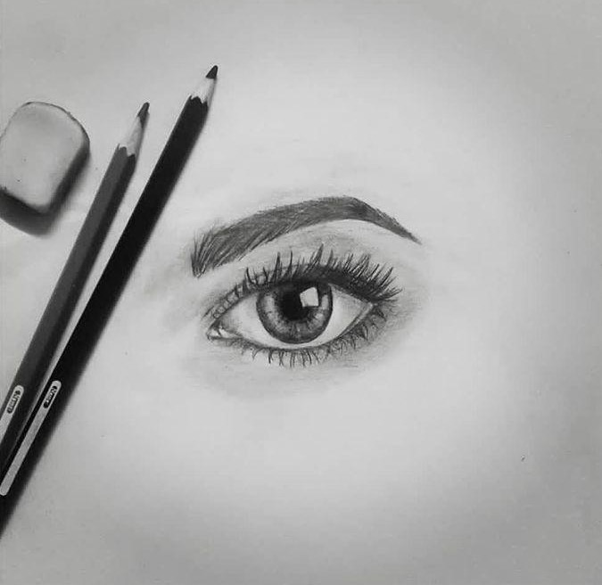
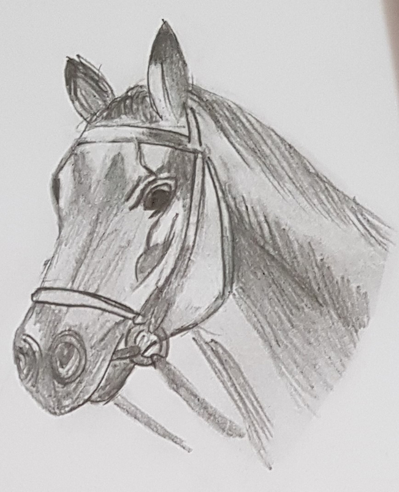
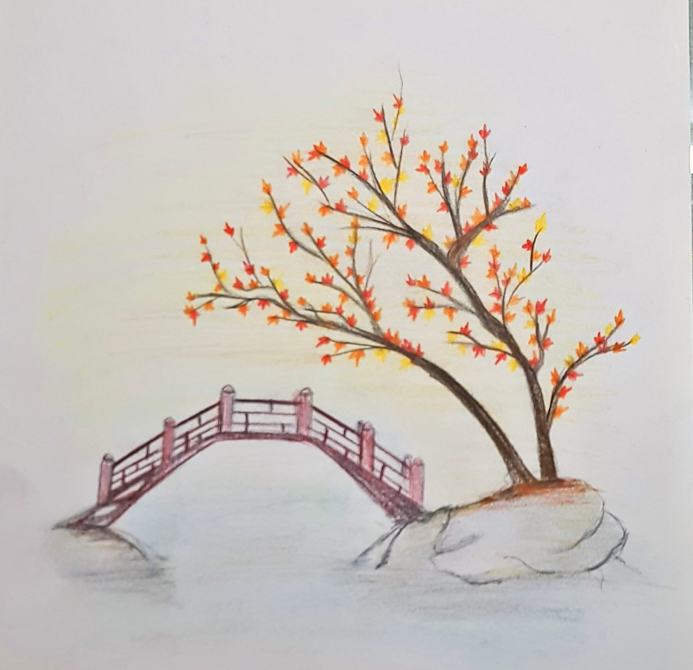
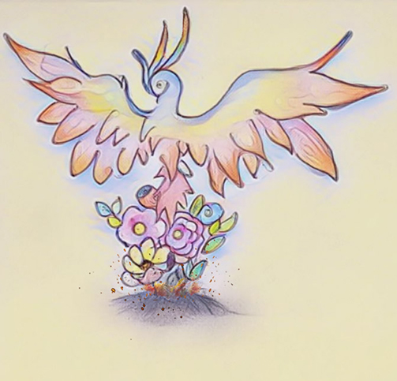

About
A bit about me.
Where I come from, what I work on, and what I do when I'm not in front of a terminal.
I'm a data scientist trained in computer science (B.Sc., Amirkabir University of Technology) and data science (M.Sc., KAIST — Human Factors and Ergonomics Lab).
My work moves between research and engineering: validating computer-vision pipelines against ground-truth motion capture, building the data infrastructure that turns raw sensor recordings into something a clinician or researcher can act on, and shipping the result as a tool the intended user can actually operate.
I'm currently a data scientist at 3R Innovation in Daejeon, working on the digital-phenotyping pipeline for a pediatric ADHD study. Alongside the technical work, I've started taking on product-side tasks from our project manager — scoping, writing up decisions, and thinking about who the work is actually for. The questions adjacent to building (what to build, for whom, why now) interest me, and I'd like to grow in that direction without leaving the technical work behind.
Before research, I shipped backend systems for Iran's national digital cheque infrastructure. I care about clean abstractions, evidence over opinion, and tools that respect the people using them.

Education
-
2023 — 2025
M.Sc., Data Science · KAIST
Human Factors and Ergonomics Laboratory · Daejeon, South Korea
-
2015 — 2020
B.Sc., Computer Science · Amirkabir University of Technology
Tehran Polytechnic · Tehran, Iran
Beyond work
Things I do when I'm not in front of a terminal — they shape how I look at problems.
Fifteen years on the mat, ending as a 4th-dan black belt and team captain at Amirkabir University. National medalist between 2016 and 2020.

Mostly birds, light, and quiet things — taken on long walks.




Pencil and ink. A way of looking at things slowly.




Recognition
-
2022
Global Korea Scholarship — Embassy Track
Korean Ministry of Education (NIIED)
One of 4 recipients nationwide for graduate study in South Korea.
-
2015
Merit-Based Fee-Waiver Scholarship
Amirkabir University of Technology
Top 0.01% in Iran's National University Entrance Exam (Konkur).